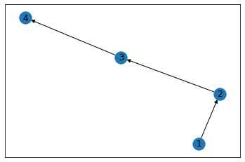
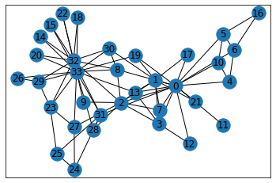
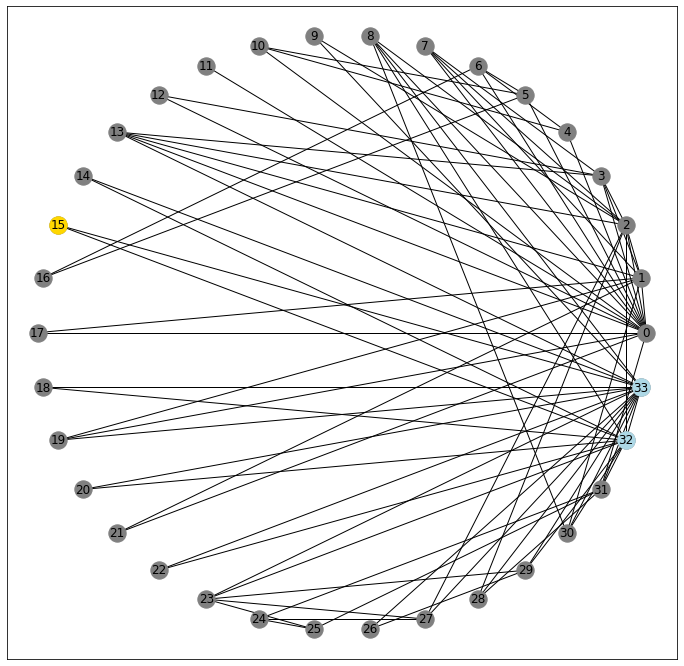
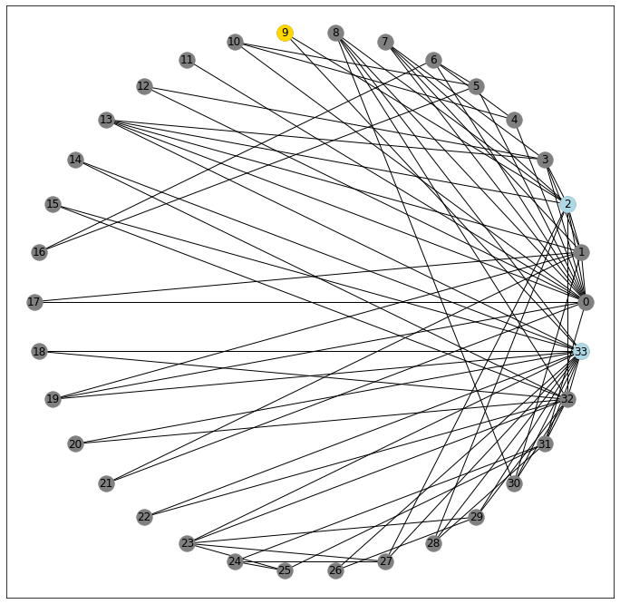
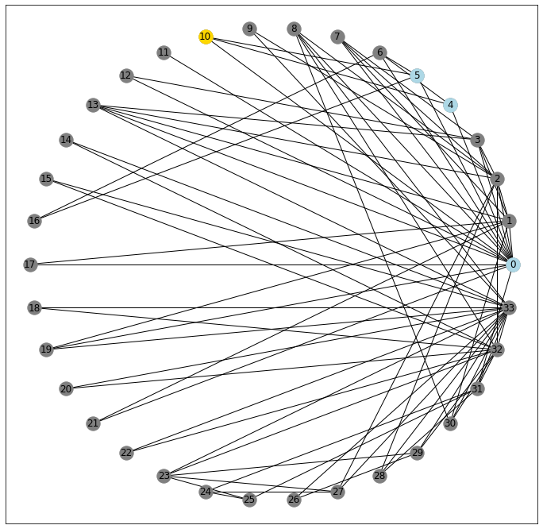
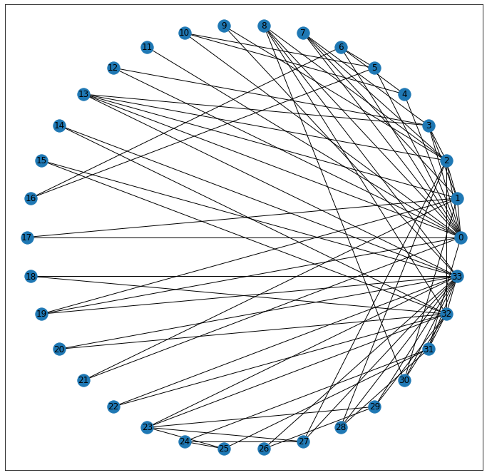
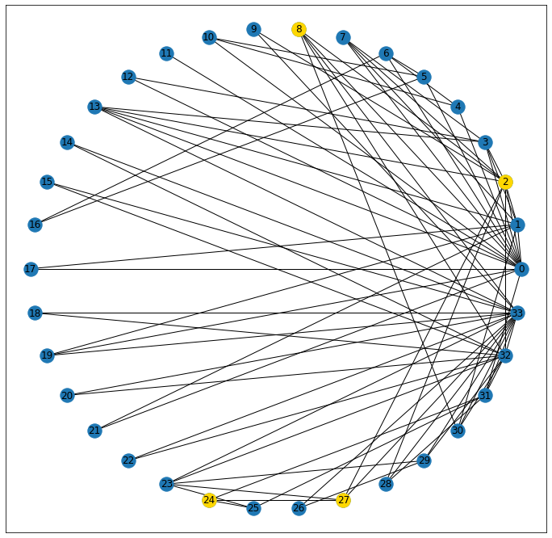

Basic Terminology and Inspection
Node Inspection
For this, we’ll throw together a bare-bones network representing a straight-line, directed path from 1 to 4, peppering in weights along the edges.
%pylab inline
import networkx as nx
F = nx.DiGraph()
F.add_weighted_edges_from([(1, 2, .3), (2, 3, .4), (3, 4, .5)])Populating the interactive namespace from numpy and matplotlib
Simple stuff, yeah?
nx.draw_networkx(F)
Here, we built F with simple integers, but we could have just as easily used str or any other hashable type.
F.nodesNodeView((1, 2, 3, 4))
Now, if we want to drill in to any particular node, we can simply subscript the Graph object by it’s node label
F[2]AtlasView({3: {'weight': 0.4}})
As you can see, this only gives us a partial picture– namely the outbound edge(s) and the relevant edge attributes.
If instead, we wanted to see everything– incoming and outgoing– we’d use the nx.all_neighbors() method
list(nx.all_neighbors(F, 2))[1, 3]
However you’ll notice that we lost the convenience of getting the edge attribute, automagically
A Less-Simple Dataset
In order to dive into more macro measures, we’ll import the canonical Graph Dataset that analyzes the social network of a karate class.
G = nx.karate_club_graph()
type(G)networkx.classes.graph.Graph
Inspecting the type of G, we can see that it’s a Graph (as opposed to a directional graph) and therefore the edge that connects two nodes doesn’t have any inherent direction associated to it.
pos = nx.spring_layout(G)
nx.draw_networkx(G, pos=pos)
Clustering
Quoting the book, “Some social theories consider triads essential units of social network analysis.” So what does that mean?
Well, I actually found this to be a little counter-intuitive.
For starters, let’s look at a random node in our network, 15. It’s kinda hanging out on its own, only sharing a connection with two other nodes
pos = nx.circular_layout(G)
fig, ax = plt.subplots(figsize=(12, 12))
nx.draw_networkx(G, pos=pos, ax=ax, node_color='gray')
nx.draw_networkx_nodes(G, pos=pos, nodelist=[15], node_color='gold');
nx.draw_networkx_nodes(G, pos=pos, nodelist=G[15], node_color='lightblue');
32 and 33
G[15]AtlasView({32: {}, 33: {}})
Critically, however, these two nodes are also connected to one another
33 in G[32]True
32 in G[33]True
And so in this un-directed graph, you could potentially cycle through the triangle 15-32-33-15... forever.
On the other hand, consider node 9. It also only connects to two nodes
G[9]AtlasView({2: {}, 33: {}})
pos = nx.circular_layout(G)
fig, ax = plt.subplots(figsize=(12, 12))
nx.draw_networkx(G, pos=pos, ax=ax, node_color='gray')
nx.draw_networkx_nodes(G, pos=pos, nodelist=[9], node_color='gold');
nx.draw_networkx_nodes(G, pos=pos, nodelist=G[9], node_color='lightblue');
But as you might be able to see from the picture, its neighbors aren’t connected.
33 in G[2]False
2 in G[33]False
So what does this mean?
Well, in the context of (social) networks, a node’s clustering coefficient is a measure of “what percent of all possible triangles exist between a node and all possible pairs of adjacent nodes?”
That’s a mouthful. Let’s try and unpack a little. We’ll do this by looking more closely at a more middle-of-the-road node. Here, I’ve gotten each node’s clustering coefficient and I spy that node 10 will probably give us what we’re after.
print(nx.clustering(G)){0: 0.15, 1: 0.3333333333333333, 2: 0.24444444444444444, 3: 0.6666666666666666, 4: 0.6666666666666666, 5: 0.5, 6: 0.5, 7: 1.0, 8: 0.5, 9: 0, 10: 0.6666666666666666, 11: 0, 12: 1.0, 13: 0.6, 14: 1.0, 15: 1.0, 16: 1.0, 17: 1.0, 18: 1.0, 19: 0.3333333333333333, 20: 1.0, 21: 1.0, 22: 1.0, 23: 0.4, 24: 0.3333333333333333, 25: 0.3333333333333333, 26: 1.0, 27: 0.16666666666666666, 28: 0.3333333333333333, 29: 0.6666666666666666, 30: 0.5, 31: 0.2, 32: 0.19696969696969696, 33: 0.11029411764705882}
It’s got three neighbors
G[10]AtlasView({0: {}, 4: {}, 5: {}})
pos = nx.circular_layout(G)
fig, ax = plt.subplots(figsize=(12, 12))
nx.draw_networkx(G, pos=pos, ax=ax, node_color='gray')
nx.draw_networkx_nodes(G, pos=pos, nodelist=[10], node_color='gold');
nx.draw_networkx_nodes(G, pos=pos, nodelist=G[10], node_color='lightblue');
Which makes for a possibility of 3-choose-2 possible triangle pairs:
0, 4
0, 5
4, 5
Examining each pair for connectivity, we get 2⁄3 of the neighboring connections, and therefore 2⁄3 of the possible triangles realized.
0 in G[4]True
0 in G[5]True
4 in G[5]False
Therefore, node 10 has a connectivity coefficient of .6666
Transitivity
Taken as a whole, the transitivity of a network, gives you a one-shot look at “number of triangles / number of all possible triangles”
nx.transitivity(G)0.2556818181818182
Density
Another, similar measure of “how interconnected is my network” is its density.
To work this out we’ll start with the fact that there are 34 nodes in our Graph
len(G.nodes)34
and therefore, are 561 possible pairs of nodes (assuming (m, n) == (n, m) in an undirected graph).
34*33/2561.0
Looking at our data, we can see there are 78 lines connecting pairs of data, edges
num_edges = len(nx.edges(G))
num_edges78
And therefore 483 non_edges between all of the other pairs that don’t share an edge
num_non_edges = len(list(nx.non_edges(G)))
num_non_edges483
Which is to say that all possible pairs in our graph are accounted for, between edges and non_edges
561 == (num_edges + num_non_edges)True
Therefore, we can define the density of our Graph as “the ratio of connected pairs to all possible pairs in the network”.
The Karate Graph has a density of approximately .14, which we can calculate manually
78/(78+483)0.13903743315508021
or use the function provided by networkx
nx.density(G)0.13903743315508021
Note: When working with networks where the direction does matter, this density measure will be half of what we calculated in the undirected case– because each pair could also have an edge that connects in the opposite direction
The Difference
Two measures (transitivity and density) follow the same form of “number observed shapes / number of possible shapes”, but truth be told, I don’t have a strong grasp on when one is a more appropriate measure than the other for evaluating a network as a whole.
Paths
I’m sure the mechanics of this will get worked out at length in another notebook, but for now, I wanted to get a few core definitions down.
Before we do, though, I want to point out that for this particular network, it’s possible to ping-pong from node to node such that no matter where you start, you can always reach the terminal node of interest. Or to start in on the terminology, we can say that there exists a walk– a sequence of edges– that connect any two points in our graph.
for node_1 in G:
for node_2 in G:
assert nx.has_path(G, node_1, node_2)
else:
print('No errors')No errors
fig, ax = plt.subplots(figsize=(12, 12))
nx.draw_networkx(G, pos=pos)
Tightening that definition, a trail is a walk that never visits the same edge twice. Its length is guaranteed to be less than or equal to any other valid walk between two points, because if there was a revisited edge, we would just take whatever the final step off of that node would be, instead.
A cycle is a trail that begins and ends at the same place. Our earlier discussion of “completed triangles” is a great example of a cycle.
Tightening even further, a path is a trail that never visists the same node twice.
And finally, a geodesic is a two-dollar word meaning “shortest simple path.” It has no redundant steps, and gets from point A to point B in the minimum number of steps. Here, we can see that there’s a path that exists, connecting nodes 8 and 24.
Moreover, we can use the built-in function shortest_path to determine what it is.
shortest_path = nx.shortest_path(G, 8, 24)
shortest_path[8, 2, 27, 24]
fig, ax = plt.subplots(figsize=(12, 12))
nx.draw_networkx(G, pos=pos)
nx.draw_networkx_nodes(G, pos=pos, nodelist=shortest_path, node_color='gold');
Graphs as Circles
This part still throws me for a bit of a loop, but the book also concedes that it’s a bit tricky to grok, so I’ll try and be careful.
Graph Networks borrow a lot of their descriptors from geometric terms used to describe circles. But before we get into that I want to define node eccentricity as a measure of how far from the normal/center node a point is. Note that prefix– ecc, interchangeable with the Latin ex, meaning “out”, so taken literally, this means “measure of how far out from the center” a given node is.
In the graph context, this is expressed as the max distance from a node to all other nodes in the network, like so
print(nx.eccentricity(G)){0: 3, 1: 3, 2: 3, 3: 3, 4: 4, 5: 4, 6: 4, 7: 4, 8: 3, 9: 4, 10: 4, 11: 4, 12: 4, 13: 3, 14: 5, 15: 5, 16: 5, 17: 4, 18: 5, 19: 3, 20: 5, 21: 4, 22: 5, 23: 5, 24: 4, 25: 4, 26: 5, 27: 4, 28: 4, 29: 5, 30: 4, 31: 3, 32: 4, 33: 4}
Which should track.
If you’d describe someone as “eccentric” you’d likely also use the phrase “out there” which has a more literal interpretation here than I might have expected!
Where it gets confusing is borrowing the circle terminology.
diameter is the maximum eccentricity for a graph
max_ecc = max(nx.eccentricity(G).items(), key=lambda x:x[1])[1]
nx.diameter(G) == max_eccTrue
radius is the minimum eccentricity of a Graph
Note: and has NO proportional relationship to the diameter whatsover
min_ecc = min(nx.eccentricity(G).items(), key=lambda x:x[1])[1]
nx.radius(G) == min_eccTrue
Using these terms, we’d say that the center of a graph, is a set of all nodes whose eccentricity is equal to the radius
center_nodes = nx.center(G)
center_nodes[0, 1, 2, 3, 8, 13, 19, 31]
[nx.eccentricity(G, node) for node in center_nodes][3, 3, 3, 3, 3, 3, 3, 3]
Similarly, the periphery represents all nodes whose eccentricity is equal to the diameter
periphery_nodes = nx.periphery(G)
periphery_nodes[14, 15, 16, 18, 20, 22, 23, 26, 29]
[nx.eccentricity(G, node) for node in periphery_nodes][5, 5, 5, 5, 5, 5, 5, 5, 5]